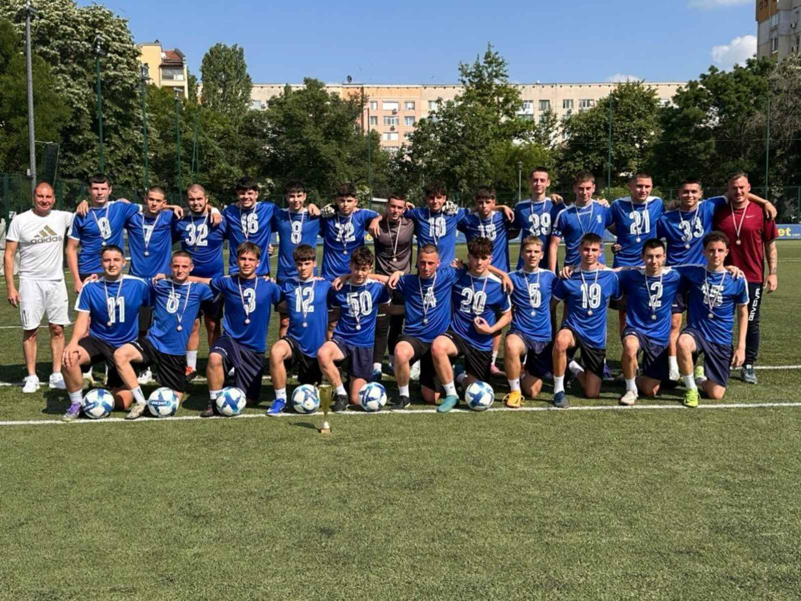

Футболна Академия „Кючук Париж Пловдив“ е място, където децата развиват своите футболни умения, характер и любов към спорта. Академията насърчава дисциплината, отборния дух, увереността и уважението към играта.
Тренировките се провеждат на Футболно игрище Инбет, ул. „Георги Икономов“ 31, 4004 Пловдив. В академията има групи Футбол 5, Футбол 7, Футбол 9 и Футбол 11.
Групите са разделени по набори и формат на игра — Футбол 5, Футбол 7, Футбол 9 и Футбол 11.
Децата се учат на дисциплина, уважение, приятелство и работа в екип.
Футболистите трупат опит, увереност и спортен характер чрез реални състезателни ситуации.
Тренировките се провеждат на Футболно игрище Инбет в Кючук Париж, Пловдив.

Начело с треньора Марио Георгиев, набор 2009 — Футбол 11, печелят купата за 1-во място в областна група за сезон 2025/2026.
Поздравления за отбора, треньора и всички деца за труда, постоянството и спортния дух!
Удобни дрехи за тренировка и движение.
Футболни обувки или спортни обувки според настилката.
Винаги е добре детето да носи бутилка с вода.
Най-важното е детето да идва с настроение и желание да се развива.